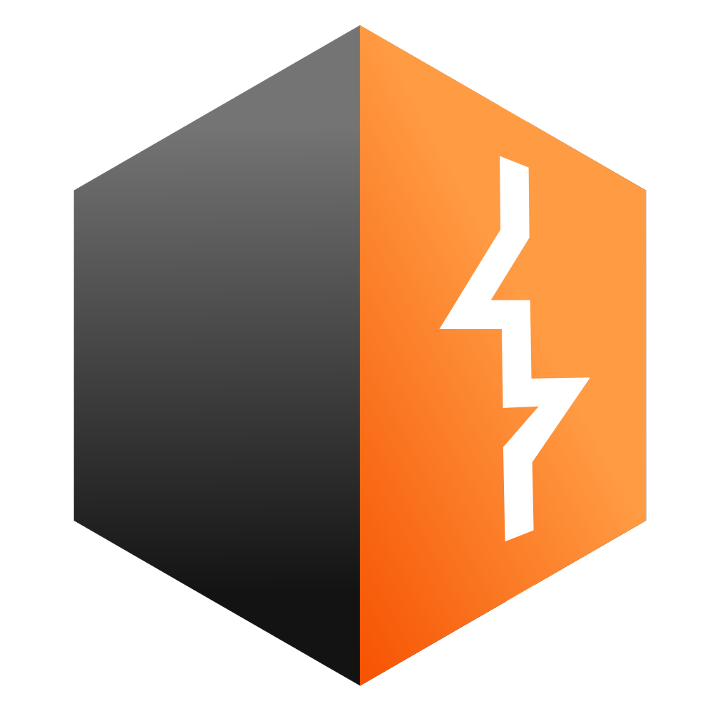

My Story
I am currently studying in the Business and Economics program at Reichman University. I am interested in ethical hacking, programming, and finance.
I enjoy making music (guitar, piano, drums), and I really like sushi.
Languages
My favorite languages for programming, data analysis, and pentesting.
Graphics
My preferred tools for graphic design and visual effects.
Hacking


My preferred tools for conducting penetration tests on networks and software.
Tools

.svg.png)

My favorite tools for data manipulation, and playing with functions.